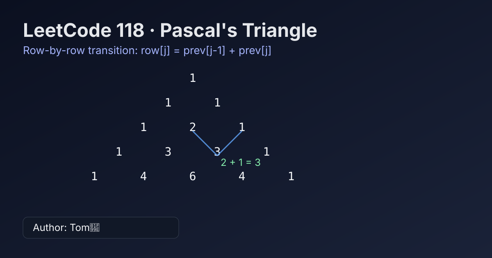

LeetCode 118: Pascal's Triangle (Row-by-Row Construction)
LeetCode 118ArrayDynamic ProgrammingToday we solve LeetCode 118 - Pascal's Triangle.
Source: https://leetcode.com/problems/pascals-triangle/

English
Problem Summary
Given numRows, return the first numRows of Pascal's triangle.
Key Insight
Each row starts and ends with 1. Every middle value is the sum of two numbers directly above it: prev[j-1] + prev[j].
Brute Force and Limitations
You could compute each binomial coefficient with factorials, but that introduces heavier arithmetic and potential overflow concerns in other languages.
Optimal Algorithm Steps
1) Initialize an empty answer list.
2) For row index i from 0 to numRows-1, create a row of length i+1 filled with 1.
3) For each middle position j in 1..i-1, set row[j] = ans[i-1][j-1] + ans[i-1][j].
4) Append row to answer.
5) Return answer.
Complexity Analysis
Time: O(numRows^2).
Space: O(numRows^2) for output (excluding output, auxiliary space is O(1)).
Common Pitfalls
- Forgetting that first and last values are always 1.
- Using current-row values while still computing that row (must read from previous row).
- Off-by-one errors in middle loop bounds.
Reference Implementations (Java / Go / C++ / Python / JavaScript)
class Solution {
public List<List<Integer>> generate(int numRows) {
List<List<Integer>> ans = new ArrayList<>();
for (int i = 0; i < numRows; i++) {
List<Integer> row = new ArrayList<>(Collections.nCopies(i + 1, 1));
for (int j = 1; j < i; j++) {
row.set(j, ans.get(i - 1).get(j - 1) + ans.get(i - 1).get(j));
}
ans.add(row);
}
return ans;
}
}func generate(numRows int) [][]int {
ans := make([][]int, 0, numRows)
for i := 0; i < numRows; i++ {
row := make([]int, i+1)
row[0], row[i] = 1, 1
for j := 1; j < i; j++ {
row[j] = ans[i-1][j-1] + ans[i-1][j]
}
ans = append(ans, row)
}
return ans
}class Solution {
public:
vector<vector<int>> generate(int numRows) {
vector<vector<int>> ans;
ans.reserve(numRows);
for (int i = 0; i < numRows; ++i) {
vector<int> row(i + 1, 1);
for (int j = 1; j < i; ++j) {
row[j] = ans[i - 1][j - 1] + ans[i - 1][j];
}
ans.push_back(move(row));
}
return ans;
}
};class Solution:
def generate(self, numRows: int) -> list[list[int]]:
ans: list[list[int]] = []
for i in range(numRows):
row = [1] * (i + 1)
for j in range(1, i):
row[j] = ans[i - 1][j - 1] + ans[i - 1][j]
ans.append(row)
return ansvar generate = function(numRows) {
const ans = [];
for (let i = 0; i < numRows; i++) {
const row = new Array(i + 1).fill(1);
for (let j = 1; j < i; j++) {
row[j] = ans[i - 1][j - 1] + ans[i - 1][j];
}
ans.push(row);
}
return ans;
};中文
题目概述
给定整数 numRows，返回杨辉三角的前 numRows 行。
核心思路
每一行首尾恒为 1；中间位置满足转移：row[j] = prev[j-1] + prev[j]。按行构建即可。
暴力解法与不足
暴力可用组合数公式（阶乘）逐项计算，但实现更重，也会引入不必要的大数或精度风险。
最优算法步骤
1）初始化答案数组。
2）遍历行号 i = 0..numRows-1，新建长度为 i+1 且元素初始为 1 的行。
3）遍历中间位置 j = 1..i-1，用上一行两相邻元素之和更新当前值。
4）将当前行加入答案。
5）返回答案。
复杂度分析
时间复杂度：O(numRows^2)。
空间复杂度：O(numRows^2)（输出所需；若不计输出，额外空间为 O(1)）。
常见陷阱
- 忘记首尾元素固定为 1。
- 在构造当前行时错误读取“当前行刚写入的值”，应只依赖上一行。
- 中间循环边界写错导致越界或漏算。
多语言参考实现（Java / Go / C++ / Python / JavaScript）
class Solution {
public List<List<Integer>> generate(int numRows) {
List<List<Integer>> ans = new ArrayList<>();
for (int i = 0; i < numRows; i++) {
List<Integer> row = new ArrayList<>(Collections.nCopies(i + 1, 1));
for (int j = 1; j < i; j++) {
row.set(j, ans.get(i - 1).get(j - 1) + ans.get(i - 1).get(j));
}
ans.add(row);
}
return ans;
}
}func generate(numRows int) [][]int {
ans := make([][]int, 0, numRows)
for i := 0; i < numRows; i++ {
row := make([]int, i+1)
row[0], row[i] = 1, 1
for j := 1; j < i; j++ {
row[j] = ans[i-1][j-1] + ans[i-1][j]
}
ans = append(ans, row)
}
return ans
}class Solution {
public:
vector<vector<int>> generate(int numRows) {
vector<vector<int>> ans;
ans.reserve(numRows);
for (int i = 0; i < numRows; ++i) {
vector<int> row(i + 1, 1);
for (int j = 1; j < i; ++j) {
row[j] = ans[i - 1][j - 1] + ans[i - 1][j];
}
ans.push_back(move(row));
}
return ans;
}
};class Solution:
def generate(self, numRows: int) -> list[list[int]]:
ans: list[list[int]] = []
for i in range(numRows):
row = [1] * (i + 1)
for j in range(1, i):
row[j] = ans[i - 1][j - 1] + ans[i - 1][j]
ans.append(row)
return ansvar generate = function(numRows) {
const ans = [];
for (let i = 0; i < numRows; i++) {
const row = new Array(i + 1).fill(1);
for (let j = 1; j < i; j++) {
row[j] = ans[i - 1][j - 1] + ans[i - 1][j];
}
ans.push(row);
}
return ans;
};
Comments